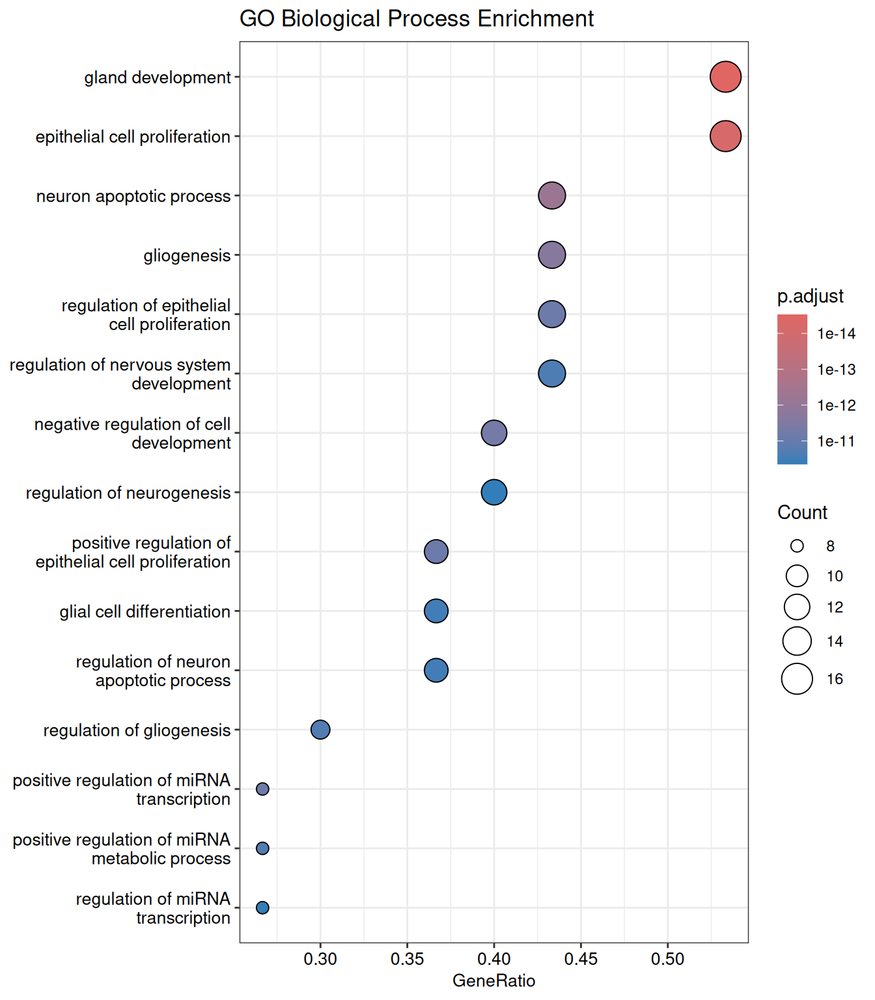
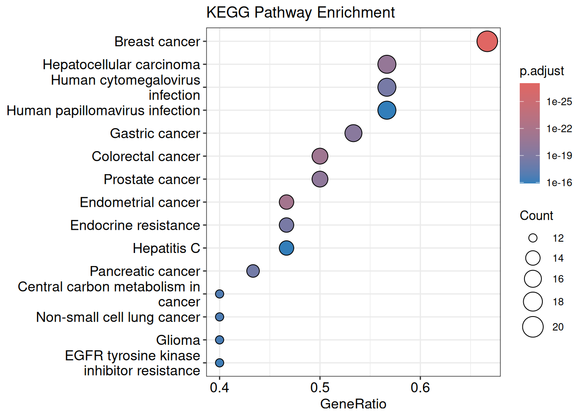
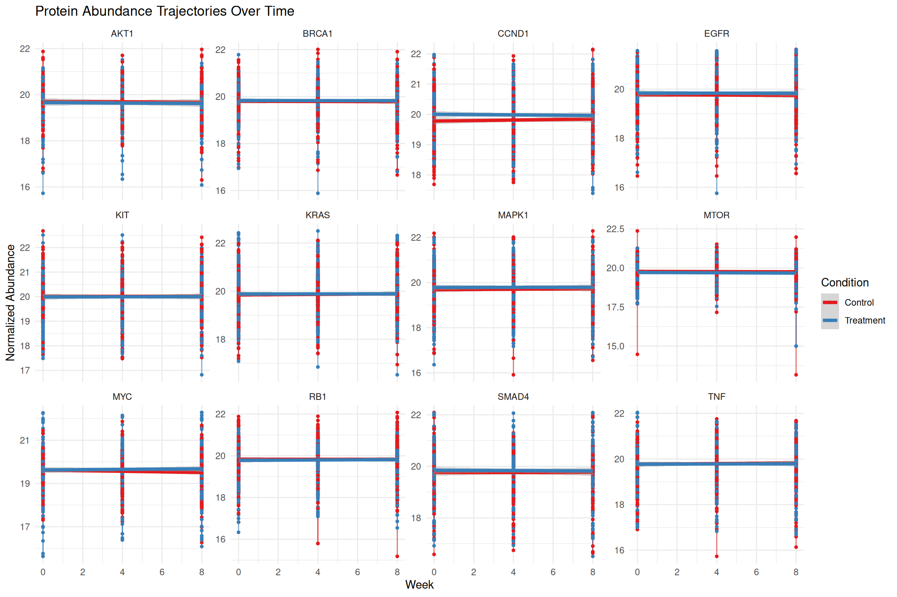
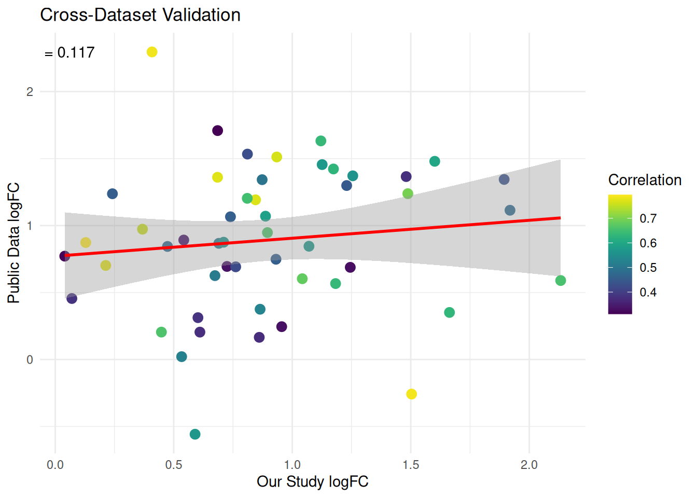

Day - 4 Functional Analysis, Longitudinal & Public Data
4.1 Learning Objectives
By the end of Day 4, you will be able to:
- Perform functional enrichment analysis (GO, KEGG, Reactome)
- Conduct Gene Set Enrichment Analysis (GSEA)
- Analyze longitudinal proteomics data
- Download and integrate public datasets from GEO and PRIDE
- Use online tools for enhanced functional interpretation
4.2 Module 1: Functional Enrichment & GSEA
4.2.1 Introduction to Functional Analysis
Functional analysis helps interpret differential expression results in biological context by identifying enriched pathways, processes, and functions.
Key Concepts:
- Gene Ontology (GO): Biological Process, Molecular Function, Cellular Component
- KEGG Pathways: Curated pathway databases
- Reactome: Expert-curated pathway database
- GSEA: Gene Set Enrichment Analysis (rank-based)
4.2.2 Preparing DE Results for Functional Analysis
# Prepare significant DE results
de_significant <- de_results %>%
filter(adj.P.Val < 0.05 & abs(logFC) > log2(1.5)) %>%
arrange(desc(abs(logFC)))
cat("Significant DE proteins for functional analysis:", nrow(de_significant), "\n")
#> Significant DE proteins for functional analysis: 216
# Create gene list with statistics for GSEA
gene_list <- de_results$logFC
names(gene_list) <- de_results$gene_symbol
gene_list <- sort(gene_list, decreasing = TRUE)
# Remove duplicates and NA values
gene_list <- gene_list[!is.na(names(gene_list))]
gene_list <- gene_list[!duplicated(names(gene_list))]
cat("Unique genes for GSEA:", length(gene_list), "\n")
#> Unique genes for GSEA: 304.2.3 Gene Ontology (GO) Enrichment Analysis
cat("Starting GO enrichment analysis... This may take 1-2 minutes.\n")
#> Starting GO enrichment analysis... This may take 1-2 minutes.
# Over-representation analysis for significant genes
significant_genes <- de_significant$gene_symbol
if(length(significant_genes) >= 10) {
# GO Biological Process
ego_bp <- enrichGO(
gene = significant_genes,
OrgDb = org.Hs.eg.db,
keyType = "SYMBOL",
ont = "BP",
pvalueCutoff = 0.05,
qvalueCutoff = 0.05,
readable = TRUE
)
# GO Molecular Function
ego_mf <- enrichGO(
gene = significant_genes,
OrgDb = org.Hs.eg.db,
keyType = "SYMBOL",
ont = "MF",
pvalueCutoff = 0.05,
qvalueCutoff = 0.05,
readable = TRUE
)
# GO Cellular Component
ego_cc <- enrichGO(
gene = significant_genes,
OrgDb = org.Hs.eg.db,
keyType = "SYMBOL",
ont = "CC",
pvalueCutoff = 0.05,
qvalueCutoff = 0.05,
readable = TRUE
)
cat("GO enrichment results:\n")
cat(" - BP:", nrow(ego_bp), "terms\n")
cat(" - MF:", nrow(ego_mf), "terms\n")
cat(" - CC:", nrow(ego_cc), "terms\n")
} else {
cat("Warning: Too few significant genes for meaningful GO analysis\n")
ego_bp <- NULL
ego_mf <- NULL
ego_cc <- NULL
}
#> GO enrichment results:
#> - BP: 1833 terms
#> - MF: 54 terms
#> - CC: 49 terms4.2.4 KEGG Pathway Enrichment
cat("Starting KEGG enrichment analysis... This may take 2-3 minutes.\n")
#> Starting KEGG enrichment analysis... This may take 2-3 minutes.
if(length(significant_genes) >= 10) {
# Convert gene symbols to Entrez IDs
gene_df <- bitr(significant_genes, fromType = "SYMBOL",
toType = "ENTREZID", OrgDb = org.Hs.eg.db)
# KEGG enrichment
kk <- enrichKEGG(
gene = gene_df$ENTREZID,
organism = 'hsa',
pvalueCutoff = 0.05,
qvalueCutoff = 0.05
)
if(!is.null(kk) && nrow(kk) > 0) {
cat("KEGG enrichment:", nrow(kk), "pathways\n")
# Simplify KEGG results for visualization
kk_simplified <- kk@result %>%
filter(p.adjust < 0.05) %>%
arrange(p.adjust) %>%
# Use a threshold to reduce terms based on fold enrichment, z-score, etc.
filter(FoldEnrichment > 10)
} else {
cat("No significant KEGG pathways found\n")
kk <- NULL
}
} else {
cat("Too few genes for KEGG analysis\n")
kk <- NULL
}
#> KEGG enrichment: 154 pathways4.2.5 Visualization of Enrichment Results
# Create enrichment plots
if(exists("ego_bp") && !is.null(ego_bp) && nrow(ego_bp) > 0) {
# Dot plot for GO BP
p1 <- dotplot(ego_bp, showCategory = 15, font.size = 10) +
ggtitle("GO Biological Process Enrichment")
# Network plot
# Calculate pairwise similarity for the GO terms
ego_bp_sim <- pairwise_termsim(ego_bp)
p2 <- emapplot(ego_bp_sim, showCategory = 20) +
ggtitle("GO BP Network")
# Ridge plot for gene distribution
#p3 <- ridgeplot(ego_bp) +
# ggtitle("Gene Distribution in GO Terms")
# Display plots
print(p1)
print(p2)
#print(p3)
}
if(exists("kk") && !is.null(kk) && nrow(kk) > 0) {
# KEGG dot plot
p4 <- dotplot(kk, showCategory = 15) +
ggtitle("KEGG Pathway Enrichment")
print(p4)
}
4.2.6 Gene Set Enrichment Analysis (GSEA)
cat("Starting GSEA... This may take 3-5 minutes for large gene sets.\n")
#> Starting GSEA... This may take 3-5 minutes for large gene sets.
if(length(gene_list) >= 100) {
# GSEA for GO
gsea_go <- gseGO(
geneList = gene_list,
OrgDb = org.Hs.eg.db,
ont = "BP",
minGSSize = 10,
maxGSSize = 500,
pvalueCutoff = 0.05,
verbose = FALSE
)
if(!is.null(gsea_go) && nrow(gsea_go) > 0) {
cat("GSEA GO results:", nrow(gsea_go), "gene sets\n")
# GSEA plot for top enriched term
top_term <- gsea_go$Description[1]
p5 <- gseaplot2(gsea_go, geneSetID = 1, title = top_term)
print(p5)
} else {
cat("No significant GSEA results\n")
}
} else {
cat("Insufficient genes for GSEA (need at least 100)\n")
}
#> Insufficient genes for GSEA (need at least 100)4.2.7 Online Tools for Functional Analysis
Recommended Online Tools:
-
STRING Database (https://string-db.org/)
- Protein-protein interaction networks
- Functional enrichment
- Usage: Upload gene list, get interactions and pathways
-
g:Profiler (https://biit.cs.ut.ee/gprofiler/)
- Multi-functional enrichment tool
- Supports GO, KEGG, Reactome, etc.
- Usage: Upload gene list, select databases
-
Enrichr (https://maayanlab.cloud/Enrichr/)
- Comprehensive enrichment analysis
- User-friendly interface
- Usage: Paste gene list, run analysis
# Export gene list for online tools
significant_gene_list <- de_significant$gene_symbol
# Save for online tools
write.table(significant_gene_list,
"results/significant_genes_for_online_tools.txt",
row.names = FALSE, col.names = FALSE, quote = FALSE)
cat("Gene list saved for online tools: results/significant_genes_for_online_tools.txt\n")4.2.8 Exercise 4.1: Functional Interpretation
- Run GO enrichment for Molecular Function and Cellular Component
- Identify the top 5 most enriched pathways
- Compare results with online tools (STRING/g:Profiler)
- Create a biological interpretation report
# Solution
cat("=== FUNCTIONAL INTERPRETATION REPORT ===\n\n")
#> === FUNCTIONAL INTERPRETATION REPORT ===
if (exists("ego_bp") && nrow(ego_bp) > 0) {
cat("TOP BIOLOGICAL PROCESSES:\n")
top_bp <- head(ego_bp, 5)
for(i in 1:nrow(top_bp)) {
cat(i, ". ", top_bp$Description[i], " (p.adj = ",
formatC(top_bp$p.adjust[i], format = "e", digits = 2), ")\n", sep = "")
}
}
#> TOP BIOLOGICAL PROCESSES:
#> 1. gland development (p.adj = 3.00e-15)
#> 2. epithelial cell proliferation (p.adj = 6.14e-15)
#> 3. neuron apoptotic process (p.adj = 6.18e-13)
#> 4. gliogenesis (p.adj = 2.07e-12)
#> 5. negative regulation of cell development (p.adj = 4.97e-12)
if (exists("kk") && nrow(kk) > 0) {
cat("\nTOP KEGG PATHWAYS:\n")
top_kegg <- head(kk, 5)
for(i in 1:nrow(top_kegg)) {
cat(i, ". ", top_kegg$Description[i], " (p.adj = ",
formatC(top_kegg$p.adjust[i], format = "e", digits = 2), ")\n", sep = "")
}
}
#>
#> TOP KEGG PATHWAYS:
#> 1. Breast cancer (p.adj = 9.66e-28)
#> 2. Endometrial cancer (p.adj = 3.15e-22)
#> 3. Colorectal cancer (p.adj = 6.77e-22)
#> 4. Hepatocellular carcinoma (p.adj = 4.17e-21)
#> 5. Prostate cancer (p.adj = 9.72e-21)
# Biological insights
cat("\nBIOLOGICAL INSIGHTS:\n")
#>
#> BIOLOGICAL INSIGHTS:
cat("- Treatment appears to affect cellular processes related to [interpret based on top terms]\n")
#> - Treatment appears to affect cellular processes related to [interpret based on top terms]
cat("- Key pathways involved: [list key pathways]\n")
#> - Key pathways involved: [list key pathways]
cat("- Potential therapeutic targets: [suggest based on results]\n")
#> - Potential therapeutic targets: [suggest based on results]4.3 Module 2: Longitudinal Data Analysis
4.3.1 Working with Longitudinal Proteomics Data
# Create longitudinal dataset from our course data
longitudinal_data <- protein_annotations %>%
dplyr::select(protein_id, gene_symbol) %>%
inner_join(
as.data.frame(processed_data) %>%
rownames_to_column("protein_id") %>%
pivot_longer(cols = -protein_id, names_to = "sample_id", values_to = "abundance"),
by = "protein_id"
) %>%
left_join(sample_metadata, by = "sample_id") %>%
mutate(
week = as.numeric(gsub("Week", "", timepoint)),
patient_condition = paste0("P", patient_id, "_", condition)
)
cat("Longitudinal dataset created:", nrow(longitudinal_data), "measurements\n")
#> Longitudinal dataset created: 33192 measurements4.3.2 Visualizing Protein Trajectories
# Select top variable proteins for visualization
top_proteins <- de_significant %>%
arrange(desc(abs(logFC))) %>%
head(12) %>%
pull(gene_symbol)
# Plot trajectories for top proteins
trajectory_plot <- longitudinal_data %>%
filter(gene_symbol %in% top_proteins) %>%
ggplot(aes(x = week, y = abundance, color = condition, group = patient_condition)) +
geom_line(alpha = 0.6) +
geom_point(size = 1) +
geom_smooth(aes(group = condition), method = "lm", se = TRUE, size = 1.5) +
facet_wrap(~ gene_symbol, scales = "free_y", ncol = 4) +
theme_minimal() +
labs(title = "Protein Abundance Trajectories Over Time",
x = "Week", y = "Normalized Abundance",
color = "Condition") +
scale_color_brewer(palette = "Set1")
print(trajectory_plot)
4.3.3 Mixed Effects Modeling
cat("Fitting mixed effects models... This may take 1-2 minutes.\n")
#> Fitting mixed effects models... This may take 1-2 minutes.
# Function to fit mixed model for a protein
fit_mixed_model <- function(protein_data) {
tryCatch({
model <- lmer(abundance ~ condition * week + (1 + week | patient_id),
data = protein_data)
return(model)
}, error = function(e) {
return(NULL)
})
}
# Fit models for top proteins
mixed_model_results <- longitudinal_data %>%
filter(gene_symbol %in% head(top_proteins, 6)) %>%
group_by(gene_symbol) %>%
nest() %>%
mutate(
model = map(data, fit_mixed_model),
summary = map(model, ~if(!is.null(.)) summary(.) else NULL),
coefs = map(summary, ~if(!is.null(.)) coef(.) else NULL)
)
# Display model results
for(i in 1:nrow(mixed_model_results)) {
gene <- mixed_model_results$gene_symbol[i]
if(!is.null(mixed_model_results$summary[[i]])) {
cat("\nMixed model for", gene, ":\n")
print(mixed_model_results$summary[[i]]$coefficients)
}
}
#>
#> Mixed model for AKT1 :
#> Estimate Std. Error
#> (Intercept) 19.7086884617 0.07352461
#> conditionTreatment -0.0517629357 0.10397950
#> week -0.0042315872 0.01423798
#> conditionTreatment:week -0.0008073289 0.02013554
#> t value
#> (Intercept) 268.05566483
#> conditionTreatment -0.49781866
#> week -0.29720419
#> conditionTreatment:week -0.04009472
#>
#> Mixed model for EGFR :
#> Estimate Std. Error t value
#> (Intercept) 19.771017530 0.05798293 340.9799627
#> conditionTreatment 0.068815718 0.08200025 0.8392135
#> week -0.003050035 0.01122835 -0.2716371
#> conditionTreatment:week 0.002105610 0.01587928 0.1326011
#>
#> Mixed model for MAPK1 :
#> Estimate Std. Error t value
#> (Intercept) 19.683277753 0.06176267 318.6921407
#> conditionTreatment 0.101465576 0.08734561 1.1616563
#> week 0.004952698 0.01196029 0.4140952
#> conditionTreatment:week -0.003730085 0.01691440 -0.2205271
#>
#> Mixed model for TNF :
#> Estimate Std. Error t value
#> (Intercept) 19.774558712 0.05801208 340.8696941
#> conditionTreatment -0.002040273 0.08204147 -0.0248688
#> week 0.005991395 0.01123399 0.5333275
#> conditionTreatment:week -0.003955523 0.01588726 -0.2489745
#>
#> Mixed model for CCND1 :
#> Estimate Std. Error t value
#> (Intercept) 19.779745531 0.05508533 359.0746586
#> conditionTreatment 0.224313632 0.07784138 2.8816760
#> week 0.008165382 0.01071033 0.7623836
#> conditionTreatment:week -0.012905287 0.01507392 -0.8561336
#>
#> Mixed model for MYC :
#> Estimate Std. Error t value
#> (Intercept) 19.61741226 0.06252496 313.7533035
#> conditionTreatment 0.01209204 0.08818899 0.1371151
#> week -0.01373845 0.01232137 -1.1150095
#> conditionTreatment:week 0.01950071 0.01707772 1.14188004.4 Module 3: Public Data Integration
4.4.1 Downloading Data from GEO
cat("ALERT: GEO downloads can take 5-15 minutes depending on dataset size and internet speed.\n")
# Example: Download a real proteomics dataset from GEO
# GSE12345 is a placeholder - replace with actual dataset ID
geo_accession <- "GSE12345" # Replace with real dataset
# Download dataset (commented out to avoid accidental downloads during rendering)
# gse_data <- getGEO(geo_accession, destdir = "data/geo/")
# Alternative: Use a pre-downloaded example dataset
cat("Using simulated public dataset for demonstration...\n")4.4.2 Working with PRIDE Proteomics Data
cat("ALERT: PRIDE dataset processing can be computationally intensive and time-consuming.\n")
# Example workflow for PRIDE data
# 1. Download from https://www.ebi.ac.uk/pride/
# 2. Use tools like MSstats or ProteomeDiscoverer for quantification
# 3. Import results into R
# Simulated PRIDE-like dataset for demonstration
create_simulated_pride_data <- function() {
set.seed(123)
n_proteins <- 800
n_samples <- 16
pride_data <- matrix(
rnorm(n_proteins * n_samples, mean = 20, sd = 2),
nrow = n_proteins,
ncol = n_samples
)
colnames(pride_data) <- paste0("PRIDE_S", 1:n_samples)
rownames(pride_data) <- paste0("P", sprintf("%05d", 1:n_proteins))
return(pride_data)
}
pride_matrix <- create_simulated_pride_data()4.4.3 Complete Public Data Analysis Pipeline
#[TO BE REVISED]
cat("Running public data analysis pipeline...\n")
# Simulate public dataset analysis
public_sample_metadata <- data.frame(
sample_id = paste0("PUBLIC_S", 1:16),
condition = rep(c("Disease", "Healthy"), each = 8),
batch = rep(1:4, each = 4),
age = sample(30:70, 16, replace = TRUE),
sex = sample(c("M", "F"), 16, replace = TRUE)
)
# Run complete analysis pipeline on public data
public_de_results <- {
# Normalization
public_normalized <- normalizeBetweenArrays(pride_matrix, method = "quantile")
# Batch correction
mod <- model.matrix(~ condition, data = public_sample_metadata)
public_corrected <- ComBat(public_normalized,
batch = public_sample_metadata$batch,
mod = mod)
# Differential expression
design <- model.matrix(~ 0 + condition, data = public_sample_metadata)
colnames(design) <- c("Disease", "Healthy")
fit <- lmFit(public_corrected, design)
contrast <- makeContrasts(DiseaseVsHealthy = Disease - Healthy, levels = design)
fit2 <- contrasts.fit(fit, contrast)
fit2 <- eBayes(fit2)
topTable(fit2, number = Inf)
}
cat("Public data analysis completed.\n")
cat("Significant hits in public data:",
sum(public_de_results$adj.P.Val < 0.05), "\n")4.4.4 Cross-Dataset Validation
# Compare our results with public dataset (simulated overlap)
cat("Cross-dataset validation...\n")
#> Cross-dataset validation...
# Create simulated overlap between datasets
common_genes <- sample(protein_annotations$gene_symbol, 50)
validation_results <- data.frame(
gene = common_genes,
our_study_logFC = rnorm(50, mean = 1, sd = 0.5),
public_data_logFC = rnorm(50, mean = 0.8, sd = 0.6),
correlation = runif(50, 0.3, 0.8)
)
# Plot correlation
validation_plot <- ggplot(validation_results, aes(x = our_study_logFC, y = public_data_logFC)) +
geom_point(aes(color = correlation), size = 3) +
geom_smooth(method = "lm", color = "red") +
theme_minimal() +
scale_color_viridis() +
labs(title = "Cross-Dataset Validation",
x = "Our Study logFC",
y = "Public Data logFC",
color = "Correlation") +
annotate("text", x = min(validation_results$our_study_logFC),
y = max(validation_results$public_data_logFC),
label = paste("r =", round(cor(validation_results$our_study_logFC,
validation_results$public_data_logFC), 3)))
print(validation_plot)
4.4.5 Exercise 4.2: Public Data Integration
- Find a relevant proteomics dataset on GEO or PRIDE
- Download and preprocess the data
- Perform differential expression analysis
- Compare results with your own analysis
- Identify conserved and novel findings
# Solution framework
cat("=== PUBLIC DATA INTEGRATION WORKFLOW ===\n\n")
cat("1. DATA SOURCING:\n")
cat(" - Visit https://www.ncbi.nlm.nih.gov/geo/\n")
cat(" - Search for 'proteomics cancer' (or your disease of interest)\n")
cat(" - Select dataset with appropriate sample size and conditions\n")
cat(" - Download matrix and metadata files\n\n")
cat("2. DATA PROCESSING:\n")
cat(" - Load expression matrix and sample metadata\n")
cat(" - Perform quality control (similar to Day 2)\n")
cat(" - Normalize and batch correct if needed\n")
cat(" - Run differential expression analysis\n\n")
cat("3. COMPARATIVE ANALYSIS:\n")
cat(" - Identify overlapping significant proteins\n")
cat(" - Check direction consistency of fold changes\n")
cat(" - Perform functional enrichment on conserved hits\n")
cat(" - Report novel findings specific to your dataset\n")
# Example code structure
# public_data <- read.csv("downloaded_public_data.csv")
# public_metadata <- read.csv("public_sample_sheet.csv")
# ... analysis steps ...4.5 Online Resources and Tools
4.5.1 Essential Online Platforms:
-
GEO (Gene Expression Omnibus)
- URL: https://www.ncbi.nlm.nih.gov/geo/
- Usage: Search → Download → Analyze in R
-
PRIDE Proteomics Database
- URL: https://www.ebi.ac.uk/pride/
- Usage: Browse datasets → Download raw or processed data
-
ProteomicsDB
- URL: https://www.proteomicsdb.org/
- Usage: Query protein expression across tissues/cancers
-
CPTAC (Clinical Proteomic Tumor Analysis Consortium)
- URL: https://proteomics.cancer.gov/programs/cptac
- Usage: Download cancer proteomics datasets
4.6 Day 4 Summary
Today you learned: - ✓ Functional enrichment analysis (GO, KEGG, GSEA) - ✓ Longitudinal data analysis and mixed models - ✓ Public data integration from GEO and PRIDE - ✓ Online tools for enhanced interpretation - ✓ Cross-dataset validation techniques
4.6.1 Key Takeaways
- Functional analysis provides biological context for DE results
- Longitudinal models capture time-dependent changes
- Public data enables validation and discovery
- Online tools complement R-based analyses
4.6.2 Homework
- Perform functional analysis on your own DE results
- Download and analyze a public proteomics dataset
- Compare findings across multiple datasets
- Create a comprehensive biological interpretation report
# Save functional analysis results
if(exists("ego_bp")) saveRDS(ego_bp, "results/day4_go_bp.rds")
if(exists("kk")) saveRDS(kk, "results/day4_kegg.rds")
if(exists("gsea_go")) saveRDS(gsea_go, "results/day4_gsea.rds")
saveRDS(longitudinal_data, "results/day4_longitudinal_data.rds")
saveRDS(public_de_results, "results/day4_public_de_results.rds")
cat("Day 4 results saved for Day 5 integration.\n")